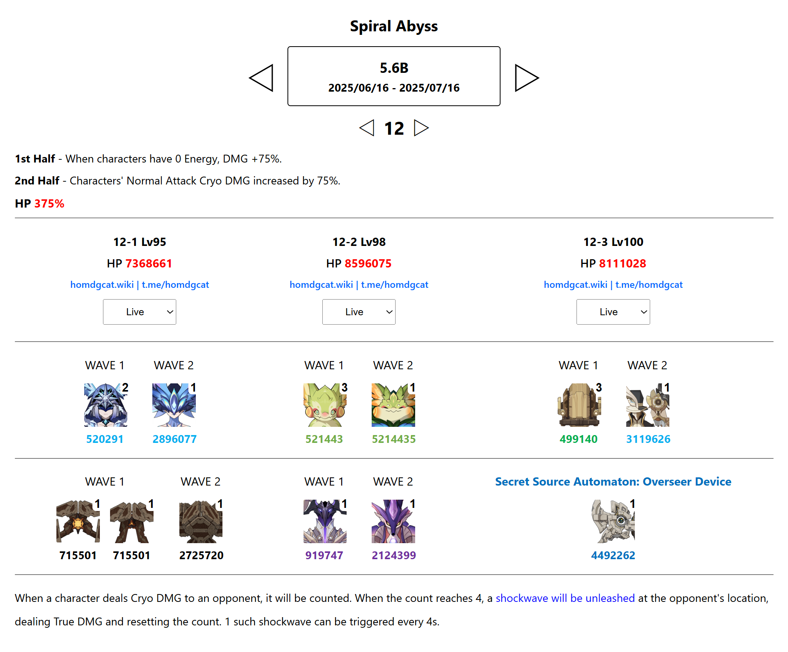

Spiral Abyss version 5.6B
The arrival of the new Cryo DPS, Skirk, with her unique playstyle, brings some significant changes to the lineup of enemies we'll be facing, as well as to the Spiral Abyss buffs. Specifically:
- 1st Half - When characters have 0 Energy, DMG +75%.
- 2nd Half - Characters' Normal Attack Cryo DMG increased by 75%.
Overview about current Spiral Abyss
The monsters' HP has increased quite a bit, but I don't think it will pose too much of a challenge for most players. However, those without strong Cryo characters or sustained Cryo DPS options like the ones mentioned above - or characters like Citlali or Escoffier - or those who haven't built units like Rosaria, Diona, Layla, or Chongyun, might end up missing a star on the final lower floor.

Analyze
First Half
Teams with Pyro DPS units will have the biggest advantage across all three chambers. In the first chamber, we face the Wayward Hermatic Spiritspeaker - a familiar enemy that has appeared in previous Abyss rotations. If your team can deal enough damage to defeat it before it summons clones, that's great. But even if it manages to summon them, there's no need to worry - you can simply use Pyro or Electro to break the clones. Lineups featuring Arlecchino, Mavuika, Gaming, or overload teams with Raiden Shogun or Clorinde will perform exceptionally well in this chamber. Citlali also shines here, as her hold E skill can immobilize the Spiritspeaker's clones - a particularly unique mechanic. Other teams with at least Pyro or Electro coverage can also clear this chamber without much trouble, but make sure to keep an eye on the timer - there's still the bottom half to handle !
On Chamber 2, we'll once again encounter the Gluttonous Yumkasaur Mountain King, now with even more HP than before. This enemy has a rather annoying mechanic if you can't defeat it during the first phase. What's more, it has a very high Dendro resistance, up to 70%, which makes Dendro-based teams nearly unusable - perhaps with the exception of Kinich? That's debatable. Fortunately, the strong teams recommended for Floor 1 will continue to perform very well here on Floor 2 as well.
Chamber 3 features the return of Icewind Suite: Nemesis of Coppelius. This is a fairly easy and familiar boss, so I won,t go into too much detail on how to defeat it. The previously recommended lineups can still handle this enemy with ease. Just one small note: you,ll need to skillfully group the three Nimble Harvester Mek - Pneuma units together. Their movement patterns are a bit odd, which can end up wasting valuable time if you're not careful.
I also have a small note for Overload teams on Floors 1 and 2. The small mobs that appear in the first wave have very low interruption resistance, so Overload reactions can easily knock them away. This means you'll need to play a bit more carefully - otherwise, the enemies might get scattered all over the place, costing you valuable time to finish them off.
Second Half
In the second half , if you don't want to switch lineups, strong Cryo DPS teams will be your best bet. That said, other team comps can still clear the first two chambers without too much trouble.
In Chamber 1, we face the Perpetual Mechanical Array—an all-too-familiar enemy that can be easily defeated with a variety of teams. The two smaller machines in the first wave aren't worth worrying about either.
Chamber 2 is guarded by the Abyss Lector: Violet Lightning in the first wave and the Millennial Pearl Seahorse in the second. Both enemies have Electro shields, which Cryo teams can break the fastest. Dendro and Pyro teams also perform reasonably well. However, when dealing with the Seahorse's shield, players need to be especially careful - don't just spam combos. If you fail to break its shield in time, it will leap into the air, making it harder and more time-consuming to finish off.
The final chamber, guarded by the Secret Source Automaton: Overseer Device, is a nightmare for those who haven't invested in strong Cryo characters. During the fight, it enters a special state where its elemental resistance becomes extremely high. On top of that, it has over 5 million HP. For players without consistent Cryo application, this boss can be a serious wall. The only effective strategy is to apply Cryo continuously to reduce its elemental resistance - only then will it take full damage from characters.
Note
Although I mentioned that strong Cryo applicators have the upper hand in the second half, Citlali is actually a special case. This is because the Secret Source Automaton: Overseer Device maintains a fixed 50% elemental resistance and deals massive damage when it comes into contact with Nightsoul. So be cautious - if you don't have many stable sources of Cryo , you'll need to carefully balance your damage output and dodging skills to survive.
Tutorial Video
No tutorial video for this Spiral Abyss because Dun was too busy :((